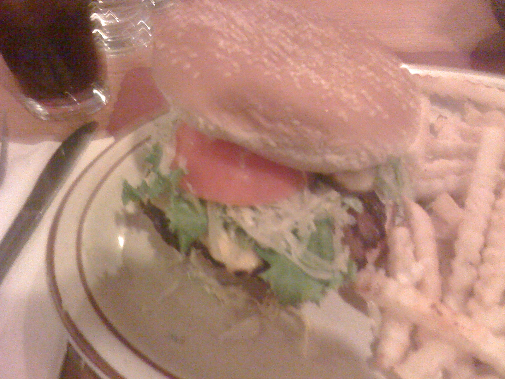
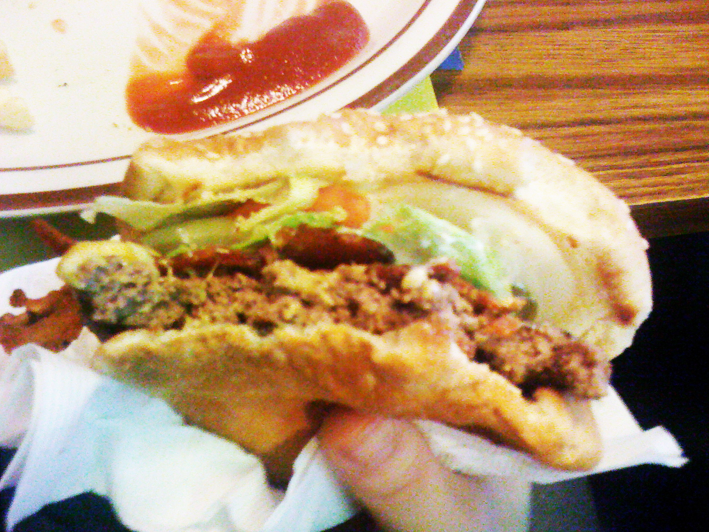
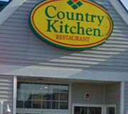
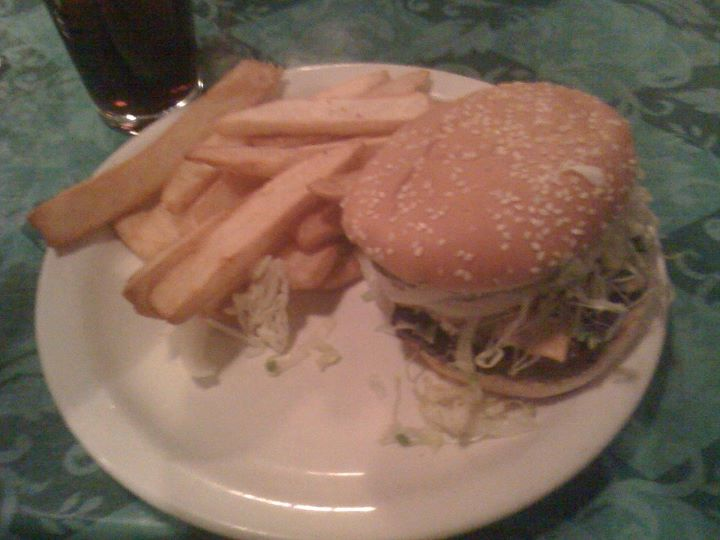

|
 |
Welcome!
|  | Pancho Villa. Monday FeatureToday we visit Pancho Villa following a tip from a fan. We were amazed by the burger we recieved and ate. Click on the picture for the review! | |
|  | Weekly Burger Review Bacon Edition.We're back and we hope you're driving safely on the snowroads in Alaska. To warm up your mood, a special Weekly Burger Review Bacon Edition has been posted. Check it out and feedback welcomed! Click on picture to read review. | |
|  | Country Kitchen. Monday Feature.While it maybe a national diner place, following a tip from a local, we tried a cheeseburger and see what we get. Click on the picture to see the review! This is our first Monday review to be posted on our new site. Past Monday reviews are on the "past reviews" links and past Weekly Burger Reviews are on the link "Weekly Burger Reviews." Our Burger Map link will show a google map of all the places we've visited! So welcome to the new site. Follow us on Twitter and become a friend at Facebook! | |
|  | Guacamole Burger! Weekly Burger Review.We stopped at Mo's O'Brady's off Huffman road in South Anchorage to take a bite out of their Guacamole Burger! Click on the burger picture and Monday we'll cashe in somewhere for a burger! This is our first Monday Review on our new website. You can leave comments to agree or disagree with us at the end of each review. Also able to share it on Facebook! We also have a Burger Map page. Here is where we map out where in Alaska we stopped at! So you can find a burger place near you! So welcome to our new website. January 3rd we will be 1 month old! | |

Check our YouTube Favorites, with awesome burgers from many sites! | ||